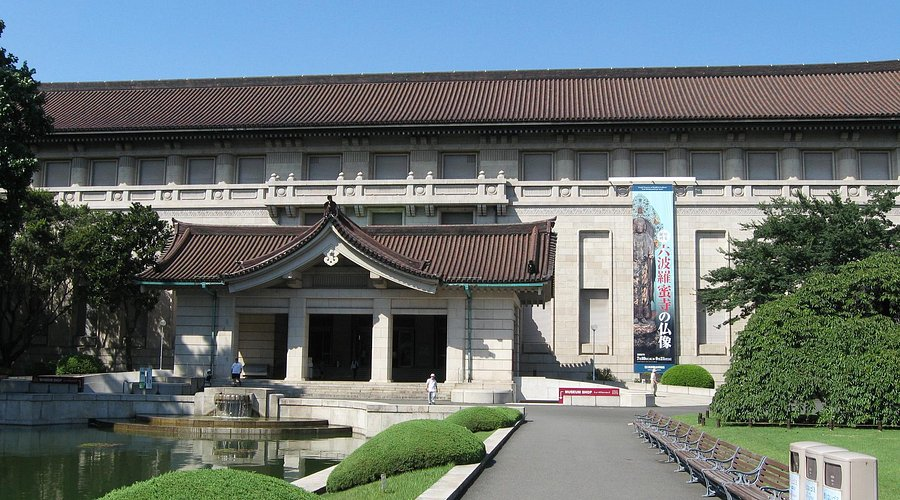
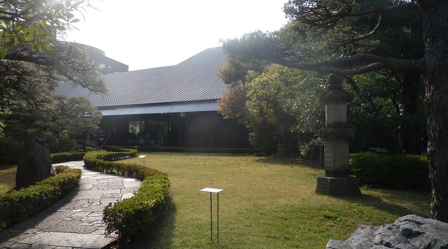
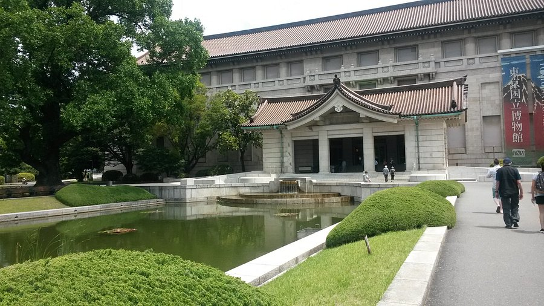
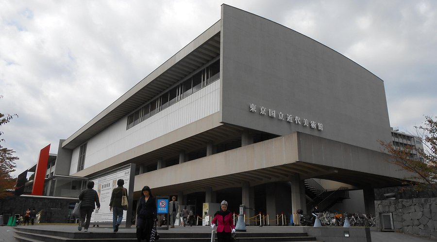

Museo nacional de tokio

La zona:
Sus exhibiciones abarcan desde la evolución de la vida en la Tierra hasta los últimos desarrollos en robótica y exploración espacial. Una de sus principales atracciones es el teatro científico en 360°, donde los visitantes pueden sumergirse en experiencias visuales asombrosas sobre el universo y la naturaleza. Además, el museo cuenta con una impresionante colección de dinosaurios, modelos a escala de cohetes espaciales y demostraciones prácticas de principios físicos que hacen que el aprendizaje sea divertido para todas las edades.
Visitar
Museo Nezu

La zona:
No hace tanto tiempo, las zonas de Akasaka y Roppongi eran célebres por su vida nocturna y sus restaurantes, bares y clubes de primera calidad. Más recientemente, con la inauguración de Roppongi Hills, Tokyo Midtown y Akasaka Sacas, la zona se ha autoproclamado como el lugar más de moda a todas las horas del día y de la noche. El barrio alberga también el Centro Nacional de Arte, el Museo de Arte Mori y gran cantidad de galerías de arte de últimas tendencias.
Visitar
Museo Nacional de Ciencia

La zona:
En Ueno y Asakusa son palpables los vestigios de la historia y la cultura del periodo Edo. El espacioso parque Ueno es un lugar fantástico para relajarse y visitar distintos museos y galerías. En Ameyoko, que comienza frente a la estación de Ueno, se apiñan las tiendas de ropa, las pescaderías y las tiendas de alimentación. Las compras masivas de finales de año convierten este mercado en un hervidero de gente. El barrio de Asakusa se desarrolló alrededor del templo Sensoji y en su centro hay muchas tiendas que venden productos y ropa del antiguo Japón. Es un lugar excelente para comprar recuerdos. La zona también es célebre por sus distintos festivales anuales, y todo el distrito participa en el gigantesco festival Sanja de mayo.
Visitar
Museo Nacional de Arte Moderno de Tokio

La zona:
Yotsuya e Iidabashi son zonas que se desarrollaron alrededor del foso exterior del palacio imperial. Muy cerca, en Kagurazaka, existe un antiguo barrio rojo de fotogénica atmósfera que evoca el viejo Tokio. Se conservan las callejuelas empedradas de antaño y existen restaurantes de larga tradición con geishas, así como pintorescos cafés antiguos en edificios de valor histórico.
Visitar